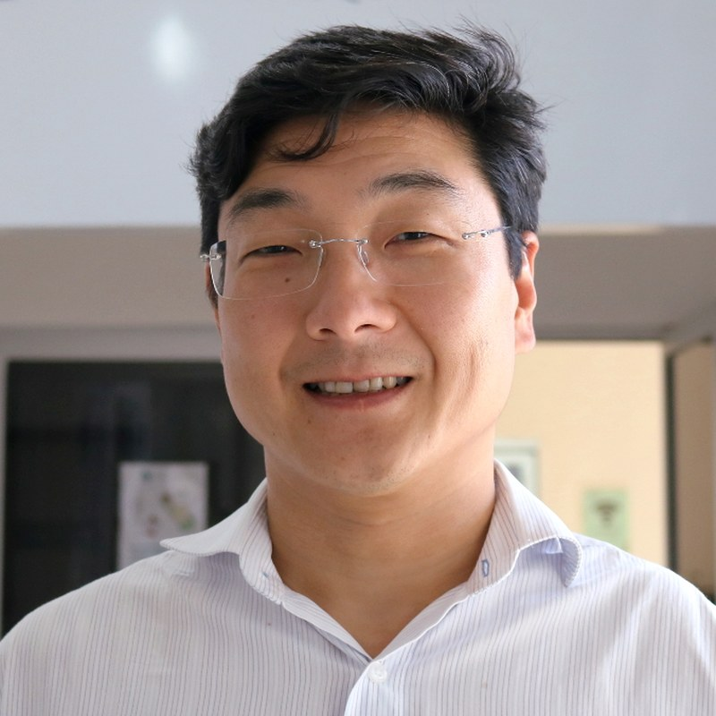
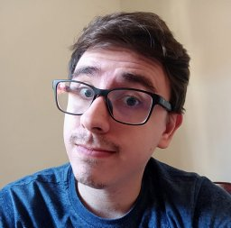
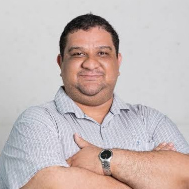
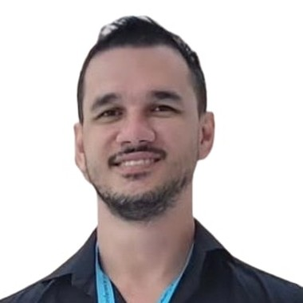
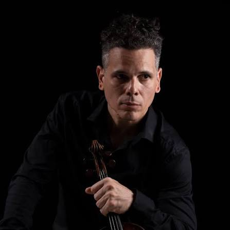
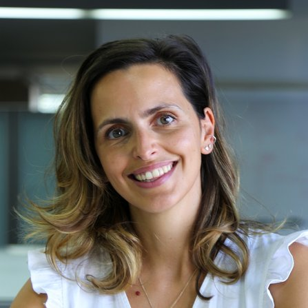
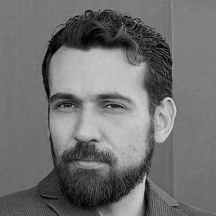
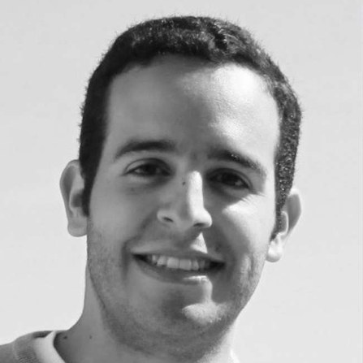
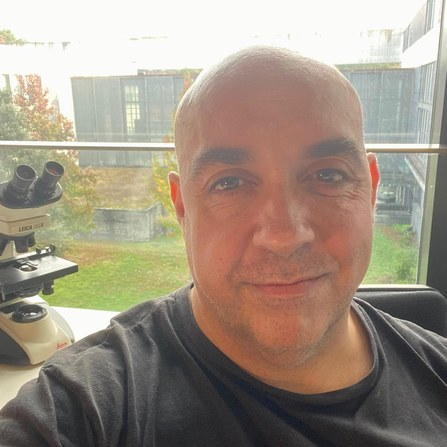

O ciclo ocorre toda quarta-feira, das 12h00 às 13h00, online. A apresentação ocupa cerca de 40 minutos e o tempo restante fica para discussão. Cada encontro tem um palestrante, alternando as instituições participantes.

Edgard Morya (IIN-ELS, Instituto Santos Dumont)Atualmente é gerente do Instituto Internacional de Neurociências Edmond e Lily Safra (IIN-ELS) do Instituto Santos Dumont (ISD) e docente do Curso de Mestrado em Neuroengenharia do IIN-ELS. Possui Pós-Doutorado (2006) e doutorado (2003) em Ciências (Fisiologia Humana) pelo Instituto de Ciências Biomédicas da Universidade de São Paulo. Possui graduação em Fisioterapia pela Faculdade de Medicina da Universidade de São Paulo (1996).

Fernando Rezende Zagatti (CTI Renato Archer · UniMAX)Será apresentada uma abordagem para a automatização de pipelines de Processamento de Linguagem Natural (PLN) aplicada à classificação de textos, com foco no uso de AutoML e meta-aprendizado. O trabalho investiga como as características de diferentes datasets textuais podem ser utilizadas para orientar a escolha de técnicas de vetorização, algoritmos de aprendizado de máquina e suas configurações, reduzindo a necessidade de busca exaustiva e de intervenção manual.
Entre as principais contribuições estão uma estratégia de otimização da vetorização baseada em similaridade e o desenvolvimento do MetaText-ClassifAI, framework de AutoML para classificação de textos. Os experimentos mostram que a similaridade entre representações vetoriais pode ser utilizada para acelerar a seleção de configurações, enquanto o meta-aprendizado permite realizar recomendações de modelos e hiperparâmetros a partir das características dos datasets. A proposta também é avaliada em comparação com outros frameworks de AutoML, considerando desempenho preditivo, tempo de execução e indicadores relacionados ao impacto ambiental.
Graduado em Ciência da Computação pela Universidade do Sagrado Coração (2018) e mestre em Ciência da Computação pela Universidade Federal de São Carlos (2021). Atualmente realiza doutorado em Ciência da Computação pela UFSCar e é Tecnologista Pleno 1 do Centro de Tecnologia da Informação Renato Archer. Tem experiência em Inteligência Artificial e Ciência de Dados, atuando principalmente em aprendizado de máquina, processamento de linguagem natural, meta-aprendizado e AutoML.

Leandro Álvaro de Alcantara Aguiar (LNSC, Depto. de Física · UFPE)Comportamentos adaptativos dependem da capacidade do cérebro de estimar intervalos de tempo e de organizar o movimento de forma flexível. Nesta conversa, apresento as linhas de trabalho que venho desenvolvendo no LNSC/UFPE. Na primeira, em colaboração com o grupo de Marcelo Reyes (UFABC), investigamos se o aprendizado de uma tarefa de estimação temporal se reflete na atividade oscilatória do cérebro, analisando o LFP ao longo do treino. Na segunda, usamos rastreamento postural com DeepLabCut para quantificar como estados de dor alteram a estrutura do movimento espontâneo.
Licenciado em Ciências Biológicas (UFRPE, 2012), mestre (2015) e doutor (2019) em Biociência Animal pela mesma instituição. O doutorado tratou da sincronização de fase entre áreas corticais durante uma tarefa de contagem de tempo, em parceria com o Departamento de Física da UFPE. Foi investigador do Instituto de Investigação da Vida e da Saúde (ICVS) da Universidade do Minho, em Portugal, entre 2022 e 2025. É Professor Visitante na UFPE desde 2025, onde leciona na pós-graduação em Física. Atua em eletrofisiologia, dinâmica cortical, sincronização de osciladores neurais e criticalidade.

André Gomes Regino (CTI Renato Archer · Campinas)A aplicação de técnicas de Inteligência Artificial, especialmente de Grandes Modelos de Linguagem (LLMs), vem ampliando as possibilidades de apoio à análise e utilização de informações na área da saúde. Entretanto, aplicações nesse domínio apresentam desafios, como a necessidade de maior precisão, atualização do conhecimento, rastreabilidade das informações e redução de alucinações. Esta apresentação discute como diferentes técnicas podem ser utilizadas para adaptar LLMs às necessidades específicas de sistemas de saúde.
Inicialmente, será apresentado o conceito de Retrieval-Augmented Generation (RAG) e seu uso em sistemas de saúde, com base em uma revisão sistemática da literatura que analisou aplicações recentes da técnica e suas características de recuperação, geração e avaliação. Em seguida, será apresentado um estudo experimental de fine-tuning especializado de LLMs para perguntas farmacológicas, utilizando informações estruturadas do DrugBank e técnicas como LoRA e QLoRA. O experimento avaliou a capacidade de um modelo LLaMA 3.1 8B de produzir respostas mais específicas sobre farmacocinética.
Graduado em Ciência da Computação pela UNESP (IBILCE, 2015), mestre (2021) e doutor (2025) em Ciência da Computação pela Unicamp. O doutorado tratou do uso de grandes modelos de linguagem para enriquecer grafos de conhecimento, com aplicação em sistemas de perguntas e respostas para comércio eletrônico. Tem MBA em Ciência de Dados pelo ICMC/USP (2025). Desde 2025 é pesquisador do Centro de Tecnologia da Informação Renato Archer (CTI), em Campinas. Atua em processamento de linguagem natural, grafos de conhecimento, ontologias e IA generativa.

Renzo Torrecuso (Depto. de Engenharia Biomédica · UFPE)O estresse desempenha papel central na saúde mental e no desempenho humano, podendo estar associado tanto a sofrimento psicológico quanto a processos adaptativos, como aprendizagem, foco, resiliência e alta performance. Este projeto investiga se dados obtidos por uma aquisição curta de ressonância magnética funcional em repouso (rsfMRI), analisados por técnicas avançadas de conectividade funcional e ciência de dados, podem distinguir perfis de baixo e alto estresse percebido. A abordagem utiliza exclusivamente dados reais de rsfMRI e modelos de aprendizado de máquina desenvolvidos com procedimentos rigorosos para minimizar vieses e vazamento de dados. Os resultados indicam que padrões de conectividade cerebral em repouso contêm informação relevante sobre a percepção de estresse, destacando conexões envolvendo regiões cerebelares, temporais, límbicas, operculares e insulares. O projeto também explora o potencial dessas assinaturas cerebrais para gerar hipóteses neurobiológicas e, futuramente, apoiar monitoramento e intervenções personalizadas em contextos clínicos, acadêmicos, profissionais e de alta performance.
Pesquisador no Departamento e no Programa de Pós-Graduação em Engenharia Biomédica da UFPE, onde chegou pelo programa Conhecimento Brasil, do CNPq, de atração e fixação de talentos. Coordena o projeto que dá nome a esta apresentação, que emprega técnicas de conectividade cerebral e ciência de dados para entender como o cérebro processa o estresse.

Ana João Rodrigues (ICVS · Universidade do Minho)Como decide o cérebro o que procurar e o que evitar? Nesta palestra vou mostrar como circuitos do nucleus accumbens e do sistema dopaminérgico sinalizam recompensa e aversão, e como estes sinais mudam à medida que os animais aprendem a antecipar o que vai acontecer. Para isso, registramos e manipulamos a atividade destes circuitos em roedores, com optogenética, eletrofisiologia e imagem.
Líder de grupo no ICVS e professora convidada da Escola de Medicina da Universidade do Minho, em Portugal. Sua pesquisa busca desvendar como o cérebro processa eventos recompensadores e aversivos para orientar comportamentos motivados, com foco especial no circuito mesolímbico. Também investiga como o estresse em janelas específicas do desenvolvimento deixa marcas duradouras no cérebro, dando origem a comportamentos mal-adaptativos, como a depressão e a dependência. Seu laboratório adota uma abordagem multidisciplinar, que combina avaliação comportamental, optogenética, eletrofisiologia, farmacologia e imagem in vivo com sensores geneticamente codificados, em modelos de roedores. Além da pesquisa, tem forte compromisso com a divulgação científica e o engajamento do público, e liderou ao longo dos anos várias iniciativas para promover a alfabetização científica da população.


Breno Cordeiro Bispo e Juliano Bandeira Lima (Depto. de Eletrônica e Sistemas · UFPE)Tradicionalmente, os estudos de conectividade cerebral se baseiam em modelos de interações diádicas, como os grafos, que não representam explicitamente interações simultâneas entre três ou mais regiões de interesse (interações de alta ordem). Para lidar com essa restrição, têm sido investigadas abordagens multimodais que permitem inferir e analisar, em nível individual, as referidas interações. Neste seminário, a abordagem considerada apoia-se no processamento topológico de sinais, em que a conectividade cerebral é representada como um campo vetorial discreto. Neste contexto, a análise se fundamenta em operadores como gradiente, divergente e rotacional, conferindo maior interpretabilidade física e mecanística aos padrões de conectividade funcional. De modo mais específico, é descrita uma metodologia que, aplicada a 100 jovens adultos saudáveis do Human Connectome Project, revelou padrões distintos de organização e interação entre sistemas cerebrais, destacando uma organização gradiente distribuída na rede de modo padrão e uma organização rotacional localizada envolvendo o sistema límbico. Esses resultados evidenciam a capacidade do framework de caracterizar propriedades complementares da conectividade funcional, evidenciando padrões de organização cerebral associados a medidas de desempenho cognitivo. Por fim, são discutidas perspectivas futuras para a abordagem, incluindo suas possíveis aplicações clínicas.
Breno Cordeiro Bispo. Doutor em Engenharia Elétrica pela UFPE (2026), com doutorado-sanduíche no Korteweg-de Vries Instituut e no Institute for Advanced Study da Universidade de Amsterdã. Mestre em Engenharia Elétrica e bacharel em Engenharia Eletrônica pela mesma universidade. É membro do Grupo de Pesquisa em Processamento de Sinais do Departamento de Eletrônica e Sistemas da UFPE. Pesquisa processamento de sinais em grafos e hipergrafos, processamento topológico de sinais, aprendizado de máquina, neurociência e sistemas complexos de alta ordem.
Juliano Bandeira Lima. Graduado (2002), mestre (2004) e doutor (2008) em Engenharia Elétrica pela UFPE, com doutorado-sanduíche na Escola de Matemática e Estatística da Carleton University, no Canadá. É professor do Departamento de Eletrônica e Sistemas da UFPE desde 2011, docente do Programa de Pós-Graduação em Engenharia Elétrica (PPGEE) e líder do Grupo de Pesquisa em Processamento Digital de Sinais da UFPE. Entre 2025 e 2026, fez pós-doutorado no ICVS / Escola de Medicina da Universidade do Minho, em Portugal. Bolsista de Produtividade em Pesquisa do CNPq e membro sênior do IEEE. Dedica-se a ferramentas de processamento de sinais, com aplicações em comunicações, neurociência e criptografia.

Hugo Leite-Almeida (ICVS · Universidade do Minho)Continua a ser um enigma a razão pela qual, perante eventos potencialmente dolorosos semelhantes, alguns indivíduos evoluem para dor crônica e outros não. Identificar os fatores que determinam esta suscetibilidade é essencial, mas difícil: os estudos clínicos são condicionados pelas patologias subjacentes, e os modelos animais tendem a ignorar a variabilidade individual, chegando a excluir os animais que não desenvolvem dor. Nesta apresentação, mostraremos como a exploração dessa variabilidade em modelos pré-clínicos revela que o ambiente inflamatório no momento da lesão é determinante para a progressão da dor. Mostraremos também que intervenções precoces, farmacológicas ou ambientais, podem proteger contra a sua cronificação.
Doutor pela Universidade do Minho. É pesquisador principal e coordenador da equipe de Neurobiologia da Dor do ICVS, na Universidade do Minho, em Portugal. Sua equipe estuda o impacto da dor crônica no comportamento, a plasticidade central associada e (endo)fenótipos preditivos de suscetibilidade e resistência à dor crônica. A equipe integra a rede HaPpY, das Ações Marie Skłodowska-Curie, sobre dor crônica e depressão comórbida. Recebeu em 2015 o Early Career Research Grant da IASP, a Associação Internacional para o Estudo da Dor.